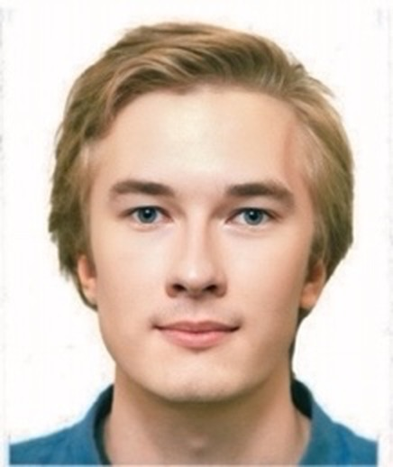

Computer Vision Lab · CAIDAS, University of Würzburg
Roman Kochnev
I build systems that design and improve neural networks automatically — combining AutoML with large language models, currently as a research assistant in Würzburg and a thesis student at Bosch Research in Renningen.
Now
- 2026Finishing my M.Sc. thesis at Bosch Research (Renningen), on architecture search guided by language models.
- 2026Looking for a PhD position starting late 2026 or 2027, ideally in Berlin around computer vision, NLP, or AutoML.
- 2025–Research assistant at the Computer Vision Lab, CAIDAS & IFI, Universität Würzburg, with Radu Timofte's group.
Research
My work sits at the intersection of AutoML, large language models, and computer vision: teaching LLMs to propose, train, and self‑improve neural network architectures without a human in the loop. I care about making model design cheaper and more accessible — not just faster benchmarks.
Publications
-
NNGPT: Rethinking AutoML with Large Language Models
Under review · first author
-
LEMUR Neural Network Dataset: Towards Seamless AutoML
arXiv:2504.10552, 2025 · second author
-
Optuna vs Code Llama: Are LLMs a New Paradigm for Hyperparameter Tuning?
arXiv:2504.06006, 2025 · first author
-
Intelligent Method for Real Estate Price Prediction in Moscow Using a Machine Learning Model
Proceedings of the 75th Days of Science of NUST MISIS Students, 2020 · ISBN 978‑5‑907227‑11‑8
Experience
-
2025–present
Research assistant (HiWi)
Universität Würzburg, Würzburg
Machine learning and large language model research; literature reviews and training data preparation for experiments.
-
2022–2023
Software developer and analyst
ROSBANK, ex Société Générale Group, Moscow
Built and maintained ML models for banking tasks; led data collection and analysis across closed data sources; mentored junior colleagues.
-
2021–2022
Data analyst
Glowbyte Consulting, Moscow
Oracle PL/SQL development, Power BI dashboards, and A/B testing for top-tier banks and major food retail chains.
Education
-
2023–2025
M.Sc. Computer Science
Julius‑Maximilians‑Universität Würzburg
-
2020–2022
M.Sc. Applied Mathematics and Computer Science
Lomonosov Moscow State University
-
2016–2020
B.Sc. Applied Mathematics
National University of Science and Technology MISIS
Skills
Languages
Python, Java, C++, SQL
Libraries
PyTorch, Transformers, PEFT, scikit-learn, OpenCV, NumPy, Pandas
Tools
Git, Kubernetes, Jira, Confluence, Power BI
Spoken
Russian (native), English (C1), German (A2–B1)